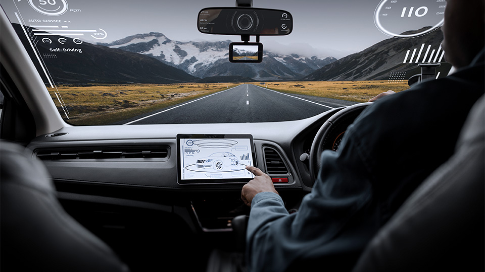
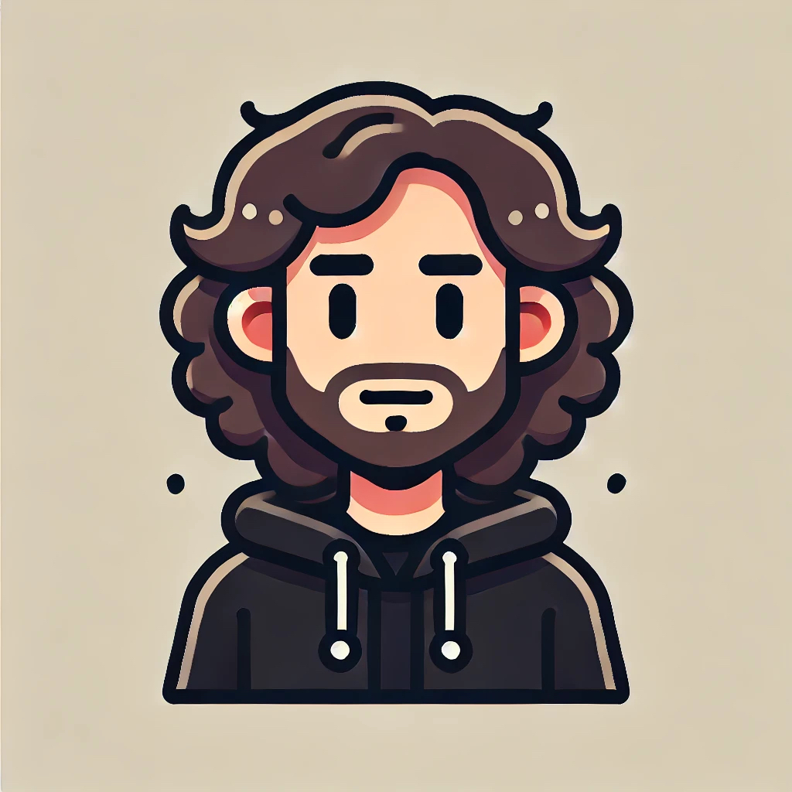
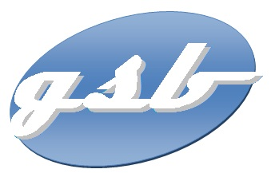
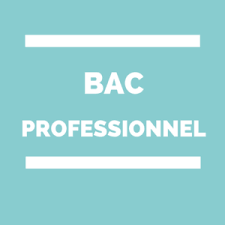
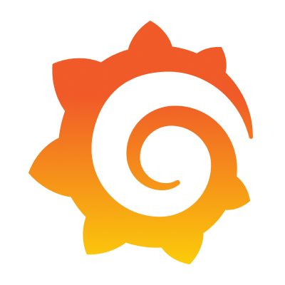
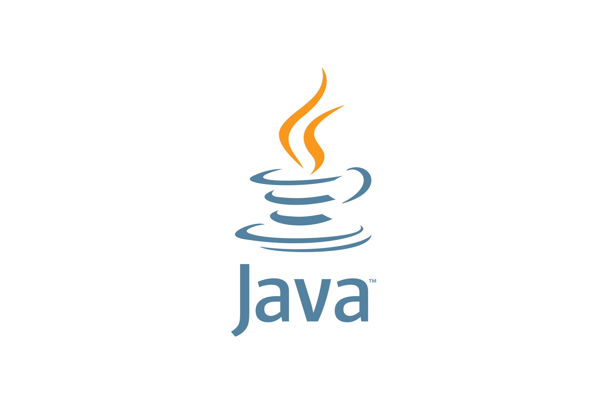
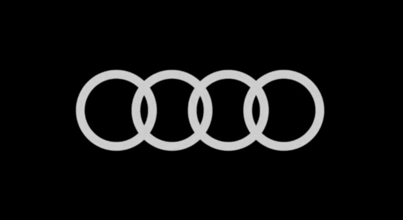

L’IA Embarquer dans l’automobile
Acquisition d’information : prise de conscience, détection & accès aux sources
Transmission & Stockage : gestion interne
Synthèse des informations collectées

Actuellement en BTS Services Informatiques aux Organisations (SIO), ce portfolio présente mon parcours,
mes compétences et les projets réalisés au cours de ma formation.
Venant d'un Bac Pro Systèmes Numériques option RISC, j'ai acquis de bonnes bases en informatique, réseaux et maintenance,
mais j'ai décidé de me lancer dans le développement en option SLAM.
Ce portfolio met en avant mes compétences acquises ainsi que mon évolution professionnelle dans le développement.
Il reflète également mon intérêt pour les nouvelles technologies et ma motivation à poursuivre dans le domaine de l’informatique.
PHP,Java,JavaScript, Python, mySQL
Réseaux,Sytèmes,Configuration,Maintenance,Support Technique,Virtualisation
HTML5, CSS3,
Git, VS Code, XAMPP

Acquisition d’information : prise de conscience, détection & accès aux sources
Transmission & Stockage : gestion interne
Synthèse des informations collectées

Application de gestion — PHP / MySQL / HTML et CSS/ Android Studio, interface responsive et sécurisée.

Le Bac Pro Systèmes Numériques (option RISC) consistant à installer, configurer et maintenir un réseau informatique
Mise en place des équipements réseaux, des services de base (adressage IP, partage de ressources, sécurité).
Diagnostic des pannes et de la documentation technique liée au projet.

Durant mon stage, j’ai installé et configuré un plugin MapGL sur Grafana afin de visualiser une infrastructure réseau sur une carte. J’ai utilisé Prometheus pour collecter les données et des fichiers YAML pour configurer l’affichage des équipements et des flux réseau.

Ce projet consiste à comprendre et implémenter des techniques de dérivation de clés cryptographiques ainsi que différents modes de chiffrement (comme AES en CBC et GCM). L’objectif était de comparer leur sécurité et leurs performances dans un contexte réel.

Création d'un site parlant de la connaissance dans le savoir au début et actuellement de chez Audi une marque appartenant au groupe